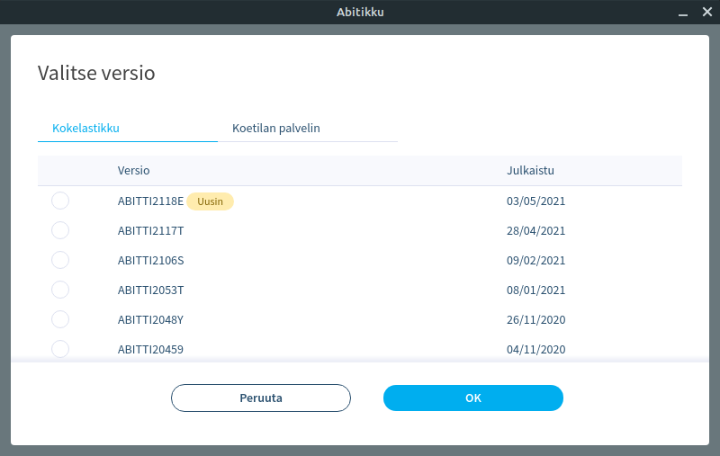
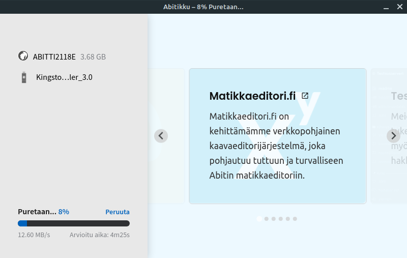
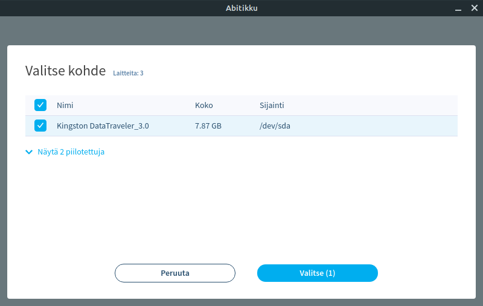
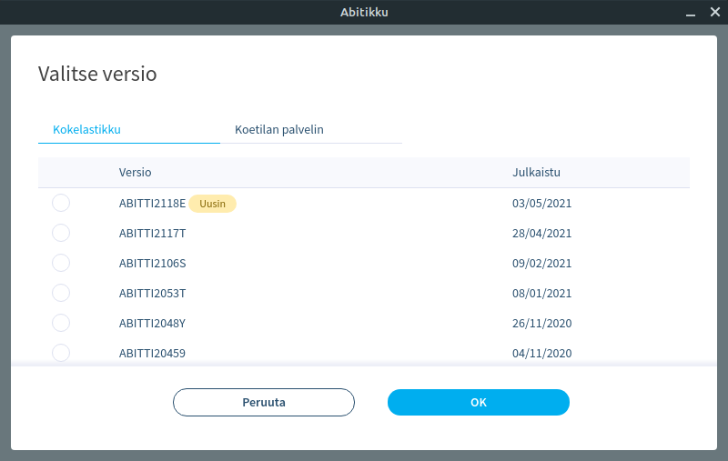
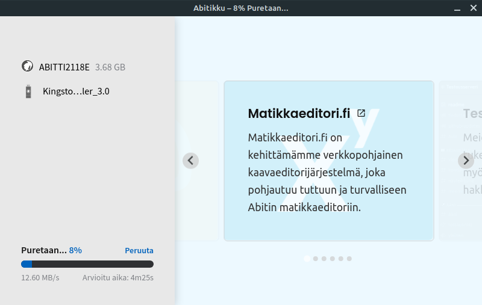
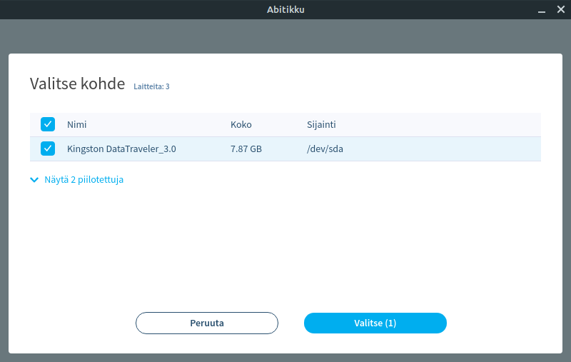

Abitikku
Abitikku on helpoin tapa luoda Abitti-tikku. Ei enää harmaita hiuksia lukiolaisille, vaan helppokäyttöinen yhden klikkauksen asennusohjelma.
Abitikku lataa uusimman virallisen Abitti-levykuvan ja asentaa sen tikullesi, vain yhdellä klikkauksella. Ohjelman tarjoavat ilmaiseksi muun muassa Matikkaeditori.fin kehittänyt ja Abitti Open Access-haavoittuvuuden löytänyt tiimi.
Tukea on saatavilla Discord-palvelimellamme.
 




